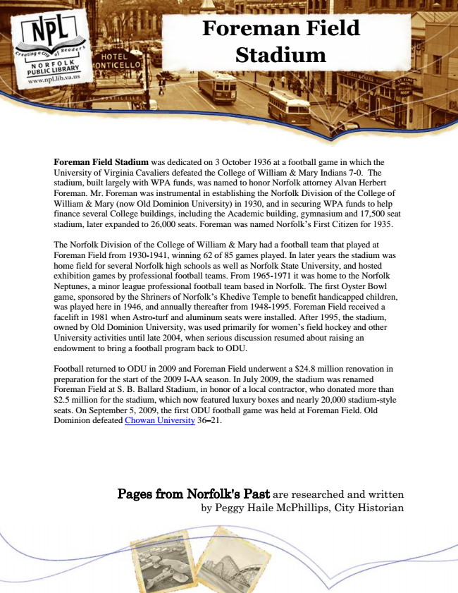

Foreman Field Stadium
Foreman Field Stadium was dedicated on 3 October 1936 at a football game in which the University of Virginia Cavaliers defeated the College of William & Mary Indians 7-0. The stadium, built largely with WPA funds, was named to honor Norfolk attorney Alvan Herbert Foreman. Mr. Foreman was instrumental in establishing the Norfolk Division of the College of William & Mary (now Old Dominion University) in 1930, and in securing WPA funds to help finance several College buildings, including the Academic building, gymnasium and 17,500 seat stadium, later expanded to 26,000 seats. Foreman was named Norfolk’s First Citizen for 1935.
The Norfolk Division of the College of William & Mary had a football team that played at Foreman Field from 1930-1941, winning 62 of 85 games played. In later years the stadium was home field for several Norfolk high schools as well as Norfolk State University, and hosted exhibition games by professional football teams. From 1965-1971 it was home to the Norfolk Neptunes, a minor league professional football team based in Norfolk. The first Oyster Bowl game, sponsored by the Shriners of Norfolk’s Khedive Temple to benefit handicapped children, was played here in 1946, and annually thereafter from 1948-1995. Foreman Field received a facelift in 1981 when Astro-turf and aluminum seats were installed. After 1995, the stadium, owned by Old Dominion University, was used primarily for women’s field hockey and other University activities until late 2004, when serious discussion resumed about raising an endowment to bring a football program back to ODU.
Football returned to ODU in 2009 and Foreman Field underwent a $24.8 million renovation in preparation for the start of the 2009 I-AA season. In July 2009, the stadium was renamed Foreman Field at S. B. Ballard Stadium, in honor of a local contractor, who donated more than $2.5 million for the stadium, which now featured luxury boxes and nearly 20,000 stadium-style seats. On September 5, 2009, the first ODU football game was held at Foreman Field. Old Dominion defeated Chowan University 36–21.
Pages from Norfolk's Past are researched and written by Peggy Haile McPhillips, City Historian